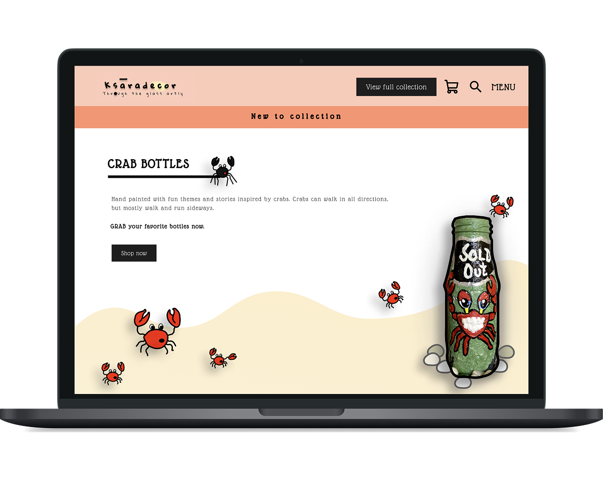

Data & languages
- Python
- SQL
- BigQuery
I explore the full arc of a problem — from understanding users in the field, to prototyping experiences, to designing data and AI architectures, to specifying agentic systems for enterprise contexts. Depending on the engagement, this leads to a shippable product, a proof of concept that validates feasibility, or a data/AI solution delivered within a client or academic project. My strength is connecting human-centred design, quantitative intelligence, and AI solution design into one coherent approach or product story, whatever the output ends up being.
Find the real product failure not just the reported symptom.
problem discovery, journey mapping, stakeholder workshops, PLG diagnosis, and UX audits.
e.g. Compliance Management redesign · Website teardownMake the solution tangible before engineering commits.
Interaction design, prototypes, product discovery, and roadmap prioritisation.
e.g. NoMoBo compliance UX · Proof Space · Pet MeTurn behaviour into decisions like KPIs, forecasts, and risk signals.
PLG analytics, statistical analysis, ML prototypes, interactive dashboards, and decision-support models that link product metrics to outcomes.
e.g. Compliance PLG metrics · Credit risk ML · Haggis HopperDecide where AI adds value like and where it should not.
Map user friction and operational bottlenecks to automation opprotunities, define autonomy boundaries, and scope AI against business KPIs before solution design begins.
e.g. Compliance Field Copilot scope · IROPS airline case studySpecify how products connect to real enterprise systems.
API and integration architecture, event-driven triggers, data platform thinking, requirements documentation, and acceptance criteria for technical delivery.
e.g. Airline integration architecture · Banking remediation conceptSpecify AI that acts safely in high-stakes workflows.
Intent libraries, conversation flows, voice UX, guardrails, escalation logic, and multi-agent orchestration specs for enterprise deployment.
e.g. ARIA airline agent · Compliance Field Copilot · DORA DevOps CopilotThe stack behind discovery, analysis, prototyping, and AI delivery — grouped by how I actually use them, not by résumé keyword density.
Combination of client and academic projects and assignments, and hands-on practice projects
A zero-to-one AI product design for performance marketers, combining automated ad creative generation and budget/bid recommendations behind a confidence-based human review system. Built end-to-end across strategy, requirements, AI system design, and technical architecture to demonstrate readiness for AI-driven marketing tech products.
Designed an agentic AI orchestration system to streamline post-disruption customer recovery for a major airline mapping recovery workflows, defining multi-agent handoffs, and specifying API and systems integration points to reduce manual handling and restore service faster after operational disruptions.
Three short case pages: Phase 1 — offline-first field assessment redesign (real). Phase 2 — product-led adoption analysis (illustrative). Phase 3 — AI enablement / field copilot specification (illustrative).
Comprehensive Data Analysis of taxi trip logs uncovering demand patterns, customer behavior, and geographic hotspots using advanced analytics. Built forecasting models and performed time series analysis to predict demand and drive data-informed resource allocation.
Interactive and multi-level spatial analysis dashboard using US census shapefiles with drill-down capability from national to state to census tract level.
Conducted comprehensive analysis of Walmart's Black Friday sales data to identify purchasing patterns, customer behavior, and revenue optimization opportunities.
A fintech credit-risk app that scores loan applications with ML and surfaces explainable decisions through a Lovable-built UX. Outcome: faster analyst review with clearer rationale behind each risk score, improving speed and confidence in automated underwriting.
Tear down/UX audit and strategic redesign recommendations for Product Space PM Fellowship website.
In Ideation: End-to-End Banking Client Issue Remediation Data Platform with lifecycle of identifying, analyzing, and resolving customer-impacting issues for a retail bank, featuring SQL analysis, data visualization, and regulatory-ready documentation.
Prototyping a Flask-based web app using LLM with Retrieval-Augmented Generation to analyze DORA metrics via natural language prompts. Phase 2 spec extends this into an agentic DevOps copilot with tool orchestration and voice interaction.
Developed performance management system for NSAR project team of Strathclyde using metrics causal maps and logic models, enabling Bayesian-network-driven performance tracking and data-informed decisions.
Developed a strategic advisory proposal to accelerate District Heating Networks, aligning with Net Zero goals.
Delivered a launch strategy for a fictitious digital retail bank leveraging BaaS (Banking-as-a-Service), focusing on vendor evaluation, regulatory alignment, and digital-first product design.

Redesign concept for an organization's outdated Compliance Management System, aimed at improving usability and enabling assessment recording via iPads and iPhones for field accessors.

Designed a mobile app concept for pet care management for pet owners and pet care service providers, enabling pet owners manage grooming, adoption, and scheduling.

Ksara Decor upcycles glass bottles with hand-painted marine-inspired art. A business ideation project for a webshop to sell these one-of-a-kind bottles online.

BobaBean is a mobile app concept for a boutique vegan café, designed to let coffee lovers customize their brew soul-deep. It recreates the cozy, intuitive feel of in-store ordering through playful layouts and tactile interactions. A fun UI exploration and Figma practice, the project reflects the café’s warm personality.

Boards and Paddles is a concept platform designed to build a vibrant community of ocean sports enthusiasts. It focuses on making events, reviews, and themes more engaging and accessible for fun-loving, curious users.
WhatsApp: +91 7550013096 (India)